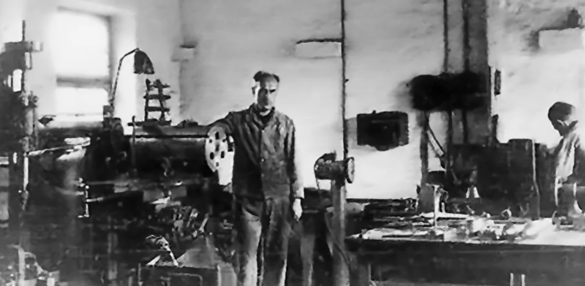

Återkomst och nystart
Alfred Zoller återvänder från Berlin till Ludwigsburg. Under nio år hade han varit utstationerad som mekanikermästare hos Hirth Flugmotoren. Den 1 september grundar Alfred Zoller sin mekaniska verkstad på Bogenstraße i Ludwigsburg. Andra världskriget hade tagit slut för knappt fyra månader sedan. Startförhållandena är därför svåra. Å ena sidan finns det mycket att reparera, å andra sidan är verktyg, material och maskiner en bristvara.

Alfred Zoller Bogenstraße i Ludwigsburg
Bogenstraße i Ludwigsburg

Reservoarpennor, tändare, brandslangar
Alfred Zoller reparerar motorer, brandsprutor, leksaker, reservoarpennor och allt annat som folk kommer till honom med. Dessutom reparerar han trasiga maskiner. De utgör grunden för att tillverka egna produkter.
Särskilt framgångsrika är hans tändare av aluminium, som han tillverkar på sin svarv. Med tiden blir amerikanska soldater hans viktigaste kunder. De betalar för tändarna främst med cigaretter, jordnötssmör eller choklad.